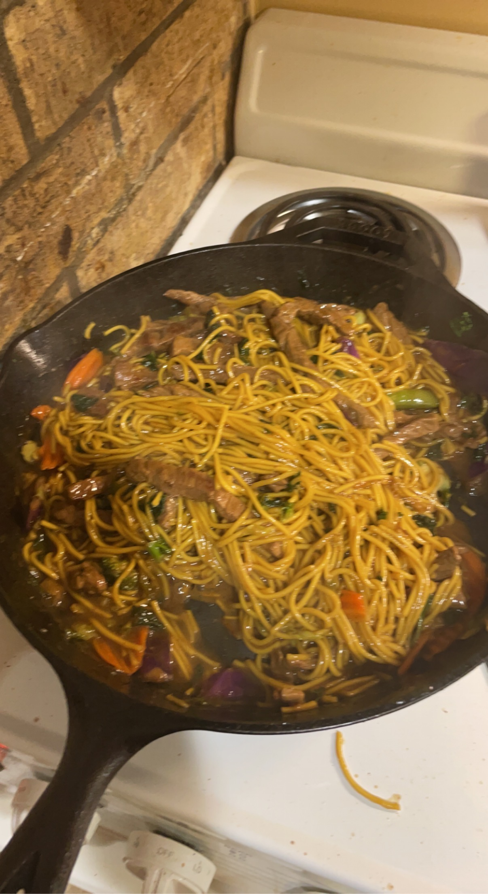

Ever since I started learning to speak Mandarin
I gained a love for Chinese and other Asian cuisine.
I cannot confirm the authenticity of this dish given
I came up with it myself, but it sure tastes good!
Ingredients
- Rice Vinegar
- Sesame Oil
- Soy Sauce
- Sischuan peppers
- Siracha
- noodles
- beef
- stir fry veggies
Steps
- head up cast iron with rice vinegar, oil, and soy sauce
- cook beef in cast iron until almost cooked
- mix in veggies and pour water into pan
- grind up Sischuan peppers and mix in
- Pour siracha into pan
- cook until water is almost all evaporated
- Serve and enjoy!